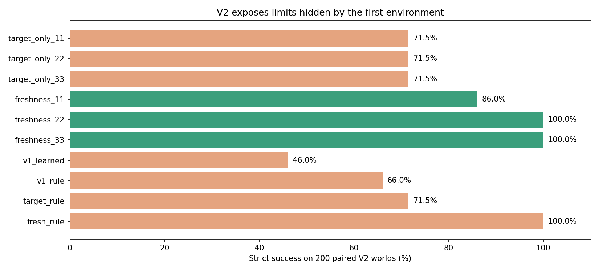

The old learned policy drops from 100% to 46% on compound challenges. Target-aware RL without freshness reaches 71.5%; adding visible freshness reaches 95.3% on average, with an imperfect seed retained. This is a structured-state control experiment, not VLM fine-tuning.
| Policy / seed | Overall | Clean | Repeated | Distractors | Stale | Combined |
|---|---|---|---|---|---|---|
| target_only_11 | 71.5% | 100.0% | 100.0% | 100.0% | 30.0% | 27.5% |
| target_only_22 | 71.5% | 100.0% | 100.0% | 100.0% | 30.0% | 27.5% |
| target_only_33 | 71.5% | 100.0% | 100.0% | 100.0% | 30.0% | 27.5% |
| freshness_11 | 86.0% | 82.5% | 80.0% | 80.0% | 92.5% | 95.0% |
| freshness_22 | 100.0% | 100.0% | 100.0% | 100.0% | 100.0% | 100.0% |
| freshness_33 | 100.0% | 100.0% | 100.0% | 100.0% | 100.0% | 100.0% |
| v1_learned | 46.0% | 100.0% | 100.0% | 0.0% | 30.0% | 0.0% |
| v1_rule | 66.0% | 100.0% | 100.0% | 100.0% | 30.0% | 0.0% |
| target_rule | 71.5% | 100.0% | 100.0% | 100.0% | 30.0% | 27.5% |
| fresh_rule | 100.0% | 100.0% | 100.0% | 100.0% | 100.0% | 100.0% |
The scripted freshness-aware rule still solves every case. Lowering scores alone is not the goal: identifying the missing information and measuring its effect is.
Full report and limitations · Original V1 study